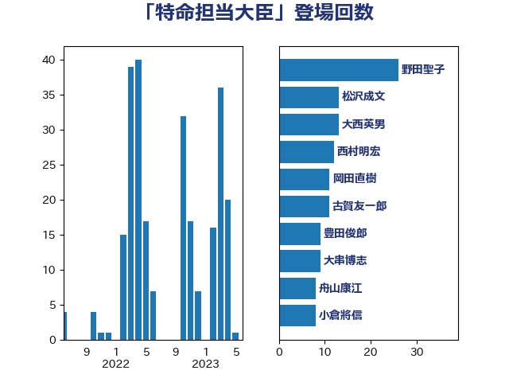

単語「特命担当大臣」

| 野田聖子 | 自由民主党 | 26 回 |
| 松沢成文 | 日本維新の会 | 13 回 |
| 大西英男 | 自由民主党 | 13 回 |
| 西村明宏 | 自由民主党 | 12 回 |
| 岡田直樹 | 自由民主党 | 11 回 |
| 古賀友一郎 | 自由民主党 | 11 回 |
| 豊田俊郎 | 自由民主党 | 9 回 |
| 大串博志 | 立憲民主党 | 9 回 |
| 舟山康江 | 国民民主党 | 8 回 |
| 小倉將信 | 自由民主党 | 8 回 |
| 河野太郎 | 自由民主党 | 7 回 |
| 酒井庸行 | 自由民主党 | 6 回 |
| 谷公一 | 自由民主党 | 6 回 |
| 小林鷹之 | 自由民主党 | 6 回 |
| 上野賢一郎 | 自由民主党 | 6 回 |
| 高市早苗 | 自由民主党 | 5 回 |
| 後藤茂之 | 自由民主党 | 5 回 |
| 吉川沙織 | 立憲民主党 | 5 回 |
| 古川俊治 | 自由民主党 | 5 回 |
| 鶴保庸介 | 自由民主党 | 4 回 |
| 西村康稔 | 自由民主党 | 4 回 |
| 山口壯 | 自由民主党 | 4 回 |
| 西銘恒三郎 | 自由民主党 | 3 回 |
| 若宮健嗣 | 自由民主党 | 3 回 |
| 石橋通宏 | 立憲民主党 | 3 回 |
| 水野素子 | 立憲民主党 | 3 回 |
| 松野博一 | 自由民主党 | 3 回 |
| 山際大志郎 | 自由民主党 | 3 回 |
| 阿部知子 | 立憲民主党 | 2 回 |
| 関口昌一 | 自由民主党 | 2 回 |
| 萩生田光一 | 自由民主党 | 2 回 |
| 稲田朋美 | 自由民主党 | 2 回 |
| 石井浩郎 | 自由民主党 | 2 回 |
| 牧島かれん | 自由民主党 | 2 回 |
| 堀場幸子 | 日本維新の会 | 2 回 |
| 國重徹 | 公明党 | 2 回 |
| 齋藤健 | 自由民主党 | 1 回 |
| 鎌田さゆり | 立憲民主党 | 1 回 |
| 鈴木英敬 | 自由民主党 | 1 回 |
| 野村哲郎 | 自由民主党 | 1 回 |
| 辻元清美 | 立憲民主党 | 1 回 |
| 緒方林太郎 | 無所属 | 1 回 |
| 礒崎哲史 | 国民民主党 | 1 回 |
| 石井正弘 | 自由民主党 | 1 回 |
| 浅川義治 | 日本維新の会 | 1 回 |
| 榛葉賀津也 | 国民民主党 | 1 回 |
| 松野明美 | 日本維新の会 | 1 回 |
| 松島みどり | 自由民主党 | 1 回 |
| 平将明 | 自由民主党 | 1 回 |
| 川田龍平 | 立憲民主党 | 1 回 |
| 岸真紀子 | 立憲民主党 | 1 回 |
| 小川淳也 | 立憲民主党 | 1 回 |
| 宮本岳志 | 日本共産党 | 1 回 |
| 宮崎勝 | 公明党 | 1 回 |
| 安江伸夫 | 公明党 | 1 回 |
| 塩村あやか | 立憲民主党 | 1 回 |
| 堤かなめ | 立憲民主党 | 1 回 |
| 保岡宏武 | 自由民主党 | 1 回 |
| 中谷一馬 | 立憲民主党 | 1 回 |